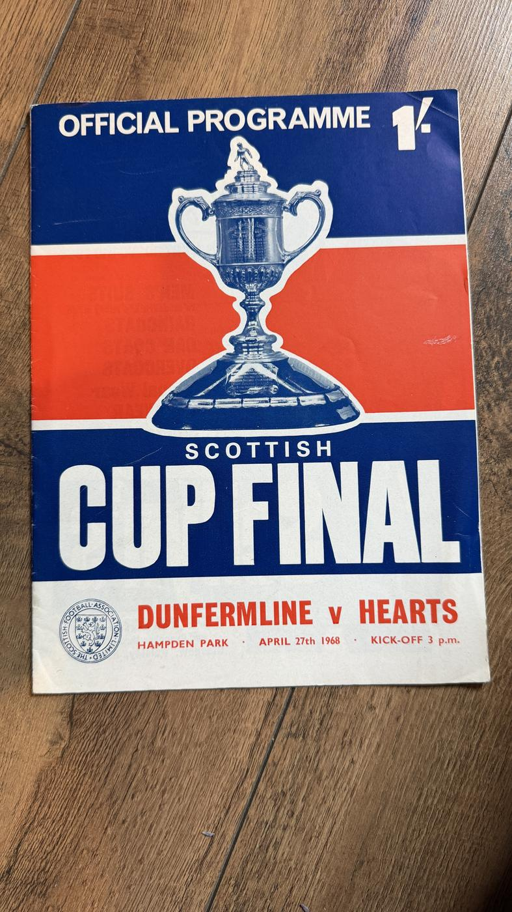

SoldFP-0975
Dunfermline Athletic vs Heart of Midlothian
£18 sold
Sold
Official programme for the 1968 Scottish Cup Final: Dunfermline Athletic v Heart of Midlothian, Hampden Park, Saturday 27 April 1968, with the classic 1960s trophy-cover design. The Pars won 3-1 to lift the Scottish Cup for the second time in their history - and they have not won it since. The centrepiece of this collection, and the match that defines a generation of Dunfermline support.
This item has been sold